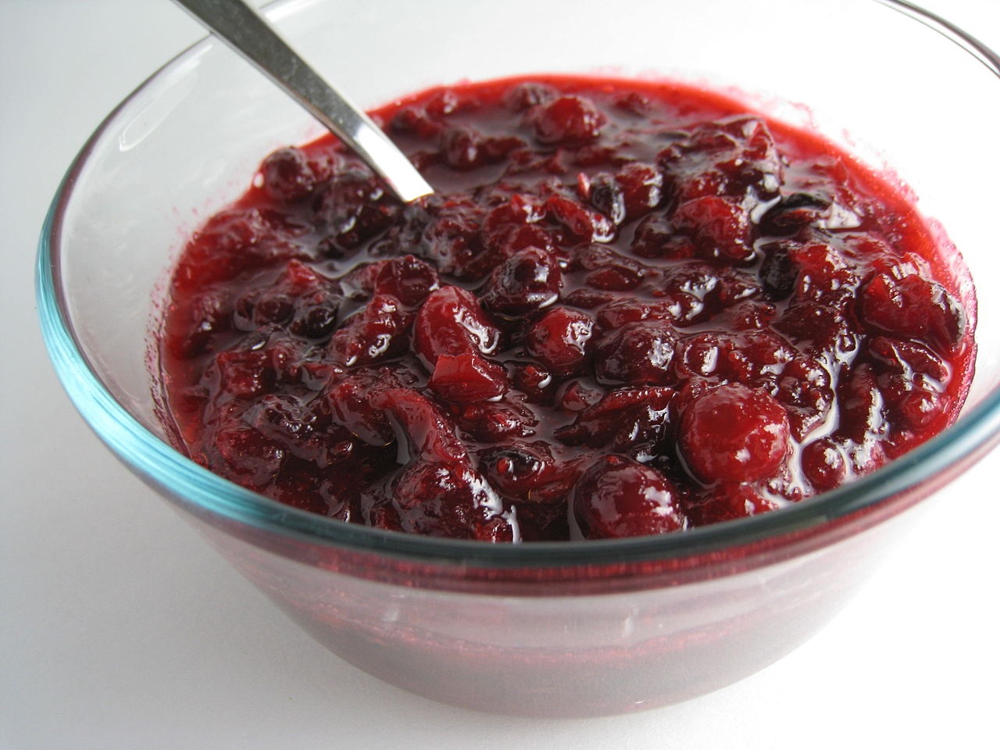

Cranberry Sauce

Overview
- Serves: 10 people
- Prep Time: 5 mins
- Cook Time: 15 mins
This recipe will remind you of the real flavor of cranberries. Whatever store-bought sauce you are used to, this will knock your socks off.
Ingredients
- Cranberries: 12 ounces
- Sugar: 1 cup
- Orange juice: 1 cup
Steps
- Gather all ingredients.
- Dissolve sugar in the orange juice in a medium saucepan over medium heat.
- Stir in the cranberries and cook until they start to pop, about 10 minutes.
- Remove from heat and place sauce in a bowl. It will thicken as it cools.
- Enjoy!
This recipe comes directly from allrecipes.com.